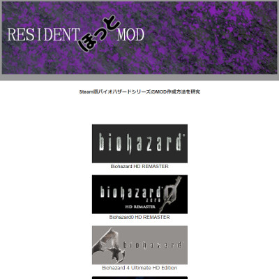

トップ>MOD工房>バイオ8MOD作成に関する情報の集め方
MODの導入方法については解説サイトが多数存在するのですが、MODの作成に関して日本語で説明しているサイトがなかったので、自分でまとめることにしました。
このページではMOD作成に関する情報の集め方についてまとめます。
なお、僕が集めた情報は別ページにまとめてあります。
一番役に立つ情報源はバイオMOD専用の掲示板である、Resident Evil Modding Forumです。
MOD作成のチュートリアル板や質問板があり、バイオハザードのMOD作成に関するほぼ全ての情報がこのサイトに集約されています。
なお、海外のサイトなので、公用語は英語です。
#modding-helpまたは#re8-moddingでMODに関する質問ができます。
ただし、discordはチャットツールであるため、同時に複数の質問に対して議論されることは少なく、質問がスルーされたり未解決のまま放置されるケースが多々あります。
なお、ディスコ鯖も公用語は英語です。
 XeNTaXは海外のゲーム掲示板です。
XeNTaXは海外のゲーム掲示板です。
バイオMOD専用の掲示板と比べると投稿数は少ないですが、バイオMODに関するスレがあります。
バイオハザードのMODの作成方法が記された日本語のサイトRESIDENTほっとMODです。
現時点(2021/06/05)でバイオ８に関するページはありませんが、RE Engineで作られたゲーム(RE2,RE3等)はMOD作成の手順がほぼ同じであるため、参考になると思います。
ただし、記載されているのはテクスチャ、メッシュ、ボーンの改造についてのみであり、オーディオ、テキスト、パラメータ等の改造に関する情報はありません。
行き詰ったときは安易に質問せず、掲示板内に答えがないか調べましょう。
RE Engineで作られたゲームはMOD作成の手順がほぼ同じであるため、RE2やRE3 のチュートリアル板も確認しましょう。
チュートリアル同様、RE2やRE3 の質問板も確認しましょう。
Discordで質問するのも良いでしょう。
ただし、「〇〇を改造したいんだけど、どうすればいいの？」というような曖昧な質問をしてはいけません。
「何のMODを作ろうとしているのか」「どの手順で躓いているのか」等の状況を具体的に説明しましょう。
MOD工房
バイオ8 MOD作成に関する情報の集め方
このページではバイオ8のMOD作成に関する「情報の集め方」を説明します。
なお、各情報源の信頼性や安全性は保証できません。MODの作成は自己責任でお願いします。
はじめに
最近、バイオハザードヴィレッジ(以下バイオ8)のMODの作成にハマっており、MODの作成手順について調べています。MODの導入方法については解説サイトが多数存在するのですが、MODの作成に関して日本語で説明しているサイトがなかったので、自分でまとめることにしました。
このページではMOD作成に関する情報の集め方についてまとめます。
なお、僕が集めた情報は別ページにまとめてあります。
1.主な情報源
主な情報源は専用掲示板とDiscordです。MOD作成に行き詰まったときはこの２か所を探索することになります。バイオMOD専用掲示板
MOD作成のチュートリアル板や質問板があり、バイオハザードのMOD作成に関するほぼ全ての情報がこのサイトに集約されています。
なお、海外のサイトなので、公用語は英語です。
Discord
DiscordにはバイオMOD専用のサーバーResident Evil - Moddingがあります。#modding-helpまたは#re8-moddingでMODに関する質問ができます。
ただし、discordはチャットツールであるため、同時に複数の質問に対して議論されることは少なく、質問がスルーされたり未解決のまま放置されるケースが多々あります。
なお、ディスコ鯖も公用語は英語です。
2.その他の情報源
上記の２つ以外にもいくつか関連サイトが存在します。自分はほとんど利用していませんが、もしかしたら欲しい情報が見つかるかもしれません。XeNTaX
バイオMOD専用の掲示板と比べると投稿数は少ないですが、バイオMODに関するスレがあります。
RESIDENTほっとMOD

この記事を書く前は「日本語の解説サイトなんてない」と思い込んでいたのですが、調べたところ１件だけ見つかりました。バイオハザードのMODの作成方法が記された日本語のサイトRESIDENTほっとMODです。
現時点(2021/06/05)でバイオ８に関するページはありませんが、RE Engineで作られたゲーム(RE2,RE3等)はMOD作成の手順がほぼ同じであるため、参考になると思います。
ただし、記載されているのはテクスチャ、メッシュ、ボーンの改造についてのみであり、オーディオ、テキスト、パラメータ等の改造に関する情報はありません。
3.バイオMOD板の活用法
MOD作成で行き詰ったときの掲示板の活用法について説明します。行き詰ったときは安易に質問せず、掲示板内に答えがないか調べましょう。
STEP1:チュートリアル板を確認する
まずは関連するチュートリアルがないかチュートリアル板を確認しましょう。RE Engineで作られたゲームはMOD作成の手順がほぼ同じであるため、RE2やRE3 のチュートリアル板も確認しましょう。
STEP2:質問板を確認する
関連する質問がないか質問板で確認しましょう。チュートリアル同様、RE2やRE3 の質問板も確認しましょう。
STEP3:検索機能を活用する
スレッドのタイトルを見るだけでは必要な情報を逃してしまう可能性があります。検索機能を活用しましょう。STEP4:質問する
どうしても欲しい情報が見つからない場合は質問板で質問しましょう。Discordで質問するのも良いでしょう。
ただし、「〇〇を改造したいんだけど、どうすればいいの？」というような曖昧な質問をしてはいけません。
「何のMODを作ろうとしているのか」「どの手順で躓いているのか」等の状況を具体的に説明しましょう。